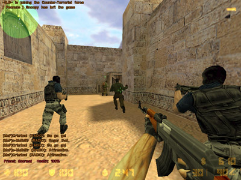
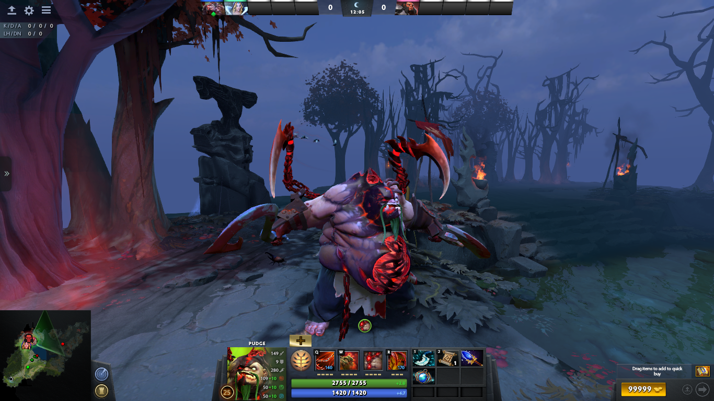
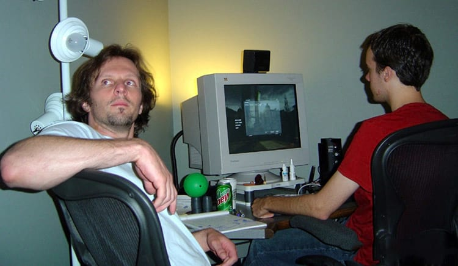
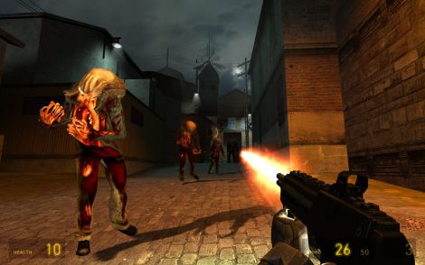
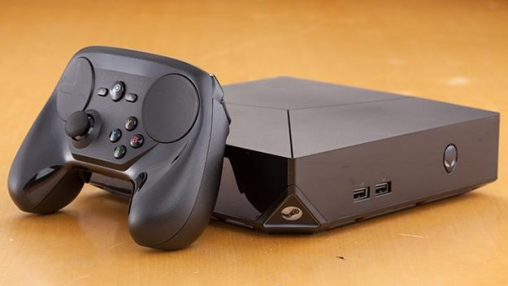

Hoje em dia a Valve Software é uma das maiores desenvolvedoras de jogos eletronicos do mundo, além de distribuir digitalmente os principais games. A empresa é autora de populares games como: Counter-Strike, Dota, Team Fortress, Portal e Half-Life.
 Ambos ex-funcionários da Microsoft, Gabe Newell e Mike Harrington são os fundadores da Valve Corporation.
Gabe e Mike lançaram, em 1998, o seu primeiro game: Half-Life. Os dois desenvolveram o game utilizando o motor Quake da id Software, conseguindo licença com um amigo da mesma.
Após seu lançamento, o jogo foi muito bem aclamado pela crítica, o sucesso foi tão grande que começaram a surgir modificações do Half-Life, que também se popularizaram, como Counter-Strike.
Com os sucessos antes lançados, a Valve precisava de um software para lançamento de atualizações. Os jogadores encontravam problemas na hora de atualizar. Com a criação dessa plataforma, as modificações seriam recebidas automaticamente por todos que possuíam os jogos.
Mais tarde, tornou-se ainda mais consistente no mercado, mostrando que o sistema de atualizações era eficiente, o que atraiu empresas para distribuírem seus jogos na plataforma.
Tornando-se também uma rede social de gamers, hoje a Valve busca expandir ainda mais seus novos produtos, como a Steam Machine e o SteamVR.
